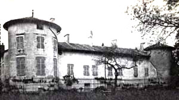
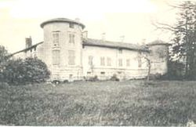
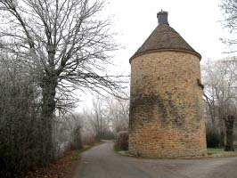
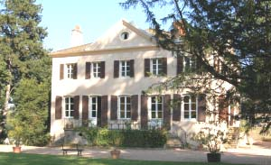
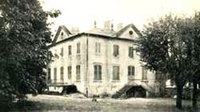
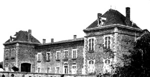
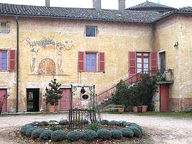
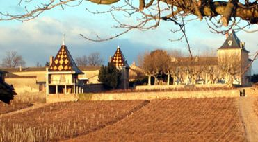

Recensement Jean-Claude Truffet
| Département | 71 — Saône-et-Loire |
| Canton | La Chapelle-de-Guinchay |
| Commune | Romanèche-Thorens |
| Type d'édifice | Château |
| Période d'origine | XVI-XVII |








TOUR-ROMANECHE, le château a été construit vers 1450 et à la fin du XVIe siècle devient possession de la famille de Chabeu, est vendue par Étienne de Rébé, mari de Françoise de Chabeu, à Claude de Noblet, elle passe ensuite, par mariage, aux Thibaut, qui relèvent le nom de Noblet.
En 1717 la propriété est vendue à Abel-Michel Chesnard et ses descendants fondent une chapelle en 1751. Le bien est vendu à un jeune suisse, Jean-Frédéric Schalleimer en 1791 puis acquis par Clément Carra vers 1840. En 1928 il appartient à Barmont et depuis les années 50 à la famille Veille.
GUIMARET; Les traces du château des Gimarets remontent au XVIle siècle, Le château a été édifié pour recevoir un notable en charge de la commune proche de Romanèche sur le lieu dit les Gimarets ou Gimarais à lemplacement dune villa romaine.
Suite à un incendie, le château est détruit en 1780. Monsieur Louis Chaumet, Procureur de la République à Mâcon, acquiert la propriété et reconstruit en 1810 une bâtisse bourgeoise dans le style romantique Aujourd'hui viticole le domaine, appartient à la famille Boyer, Eric Boyer depuis 2007, qui le rénove et exploite les vignes attenantes à la propriété.
Dans la commune plusieurs châteaux dont celui du Moulin à Vent et de Jacques. Le château Portier, jusque là propriété de la famille Gaidon a été repris par Denis Chastel-Sauzet en 2006.
TOUR Romanèche-Thorins, entouré sur trois côtés de fossés d'eau vive, restes d'une enceinte que précédait une basse cour, le château se compose d'un corps principal et de deux ailes en retour d'équerre, les deux angles extérieurs sont flanqués de deux tours rondes, le tout est couvert de toitures basses en tuiles creuses.
Guimaret avait brûlé et à été reconstruit sous forme de grande maison bourgeoise, les traces du château remontent au XVIle siècle, de forme carrée, située dans un parc dun hectare aux arbres centenaires, la bâtisse est orientée, face à son vignoble, vers le moulin-à-vent tout proche.sous le règne de Louis XIV. Cest lépoque des mousquetaires du roi, des jardins de Le Nôtre, du théâtre de Molière, de la musique de Lully et des peintures de Georges de la Tour, Rembrandt. Château Portier est une demeure bourgeoise édifiée en 1879 dans le prolongement des bâtisses âgées des XVIe et XVIIe siècles. Il est à limage des châteaux du Beaujolais, clos de mur, terrasses de platanes ombragées, tours bourguignonnes de tuiles vernissées, et de belles pièces de réception voluptueuses et richement décorées de stuf.
Famille de Chabeu
"
Château de Romanèche-Thorens, la Tout et de Guimaret